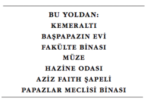
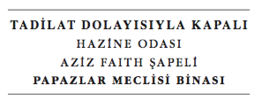

98
Langdon ile Sophie kuzey koridorunda, onu açık neften ayıran geniş sütunların gölgelerinde yavaşça ilerlediler. Nefin yarısına kadar yol kat etmiş olmalarına karşın hâlâ Newton’ın mezarını göremiyorlardı. Bir nişe yerleştirilen lahit, bulundukları ters açıdan görünmüyordu.
Sophie, “En azından burada kimse yok,” diye fısıldadı.
Rahatlamış olan Langdon başını salladı. Nefin Newton’ın mezarının yanındaki bölümü tamamen boştu. “Ben oraya gideyim,” diye fısıldadı. “Sen burada kalıp saklan, bir gören...”
Sophie çoktan saklandığı yerden çıkmış, açık alanda ilerlemeye başlamıştı.
“...olursa diyecektim,” diyen Langdon koşturarak yanına gitti.
Geniş nefi çaprazlama geçen Langdon ile Sophie, boş ümitler uyandıran niceliklerle dolu kabri gördüklerinde hiç konuşmadılar... siyah, mermer bir lahit... Newton’ın boylu boyunca yatan bir heykeli... kanatlı iki erkek çocuk... dev bir piramit... ve... devasa bir küre.
Sesi şaşırmış gibi gelen Sophie, “Bunu biliyor muydun?” dedi.
Aynı şekilde şaşırmış olan Langdon başını iki yana salladı.
Sophie, “Üzerine takımyıldızlar oyulmuş gibi duruyor,” dedi.
Nişe yaklaştıklarında, Langdon yavaşça çöktüğünü hissetti. Newton’ın mezarı kürelerle doluydu -yıldızlar, kuyrukluyıldızlar, gezegenler. Onun lahidinin üstündeki küreyi mi arayacaktı? Bu iş samanlıkta iğne aramaya benzeyecekti.
Kaygılı görünen Sophie, “Astrolojik simgeler,” dedi. “Ve sayıları çok fazla.”
Langdon kaşlarını çattı. Kâse ile gezegenler arasında Langdon’ın aklına gelen tek bağ, Venüs’ün beş köşeli yıldızıydı. Ama Mabet Kilisesi’ne giderken zaten “Venüs” şifresini denemişti.
Sophie doğruca lahidin yanına yaklaştı ama Langdon birkaç adım geride durarak, manastırı kolaçan etmeyi yeğledi.
Başını eğerek Newton’ın yaslandığı kitapların kapaklarını okuyan Sophie, “İlahiyat,” dedi. “Kronoloji. Optik. Philosophiae Naturalis Principia Mathematica?” Ona döndü. “Çağrışım yapıyor mu?”
Langdon düşünerek yaklaştı. “Hatırladığım kadarıyla Principia Mathematica, gezegenlerin yerçekimiyle ilgili bir şeydi... bunlar kesinlikle küre ama ilgisiz görünüyor.”
Kürenin üstündeki takımyıldızları gösteren Sophie, “Peki ya burçlar?” diye sordu. “Daha önce Balık’tan ve Kova’dan bahsetmiştiniz, öyle değil mi?”
Zamanın Sonu, diye düşündü Langdon. “Balık Burcu’nun sonu ve Kova Burcu’nun başlangıcının, tarikatın Sangreal Belgeleri’ni dünyaya duyurmayı planladığı tarih olduğu iddia ediliyordu.” Ama bin yıl sessiz sedasız gelip geçti ve tarihçiler gerçeğin ne zaman ortaya çıkacağı konusunda muallakta kaldı.
Sophie, “Şiirin son dizesi,” dedi. “Tarikatın gerçeği açıklamayı planlamasıyla ilgili olabilir.”
Güldü teni doluydu göbeği diye. Langdon olasılığı düşündüğünde ürperdiğini hissetti. Dizeyi hiç bu şekilde düşünmemişti.
Sophie, “Bana daha önce,” dedi. “Tarikatın ‘gül’ü ve bereketli rahmini açıklamayı planladığı zamanın, doğrudan gezegenlerin -yani kürelerin- pozisyonlarına bağlı olduğunu söylemiştin.”
İhtimalin giderek kuvvetlendiğini hisseden Langdon başını salladı. Buna rağmen, içgüdüleri ona anahtarın astronomide saklı olmadığını söylüyordu. Büyük Üstat’ın önceki cevapları hep kelime oyunlarına ve sembolik özelliklere sahiptiler -Mona Lisa, Kayalıklar Bakiresi, SOFIA. Bu kelime oyunu kavramı gezegen küreleri ve burçlara kesinlikle uymuyordu. Şu ana kadar Jacques Saunière çok titiz bir şifre yazarı olduğunu ispat etmişti ve Langdon son şifrenin... tarikatın en büyük sırrını koruyan beş harfin- sembolik açıdan uyum sağlamakla kalmayıp, kristal berraklığında olacağına inanıyordu. Bu cevap da diğerleri gibiyse, çözdüklerinde gün gibi ortada olduğunu anlayacaklardı.
Onu kolundan yakalayarak düşüncelerini bölen Sophie, “Bak!” diye heyecanlandı. Dokunuşundaki korkudan Langdon yanlarına birisinin geldiğini sandı ama Sophie’ye döndüğünde siyah mermer lahidin üstüne dehşetle baktığını gördü. Newton’ın sağ ayağının yanındaki bir noktayı işaret ederken, “Buraya biri gelmiş,” diye fısıldadı.
Langdon, onun neden kaygılandığını anlayamamıştı. Dikkatsiz bir turist, mezarlara sürttüğü füzen kalemini Newton’ın ayağının yanındaki lahit kapağına bırakmıştı. Hiçbir şey demek değildi. Langdon, onu almak için uzandı ama lahide doğru eğildiği anda cilalı siyah mermer üzerindeki ışık değişti ve Langdon donakaldı. Sophie’nin neden korktuğunu o an anlamıştı.
Newton’ın ayağının dibindeki lahidin kapağına güçlükle görülen bir füzen kalemiyle yazılan mesaj okunabiliyordu:
Teabing elimde.
Papazlar Meclisi Binası’nda güney çıkışına gidin,
Oradan halka açık bostana çıkın.
Langdon kalbi hızla çarparken, yazılanları iki kez okudu.
Sophie başını çevirerek, nefi inceledi.
Kelimeleri gördükten sonra kapıldığı korkuya rağmen, Langdon kendi kendine bunun iyi haber olduğunu söylüyordu. Leigh hâlâ yaşıyor. Bunun bir anlamı daha vardı. “Şifreyi bilmiyorlar,” diye fısıldadı.
Sophie başını salladı. Yoksa neden burada olduklarını bildirsinler?
“Şifreyle Leigh’i değiş tokuş yapmak isteyebilirler.”
“Ya da bir tuzak.”
Langdon başını iki yana salladı. “Sanmıyorum. Bostan, manastır duvarlarının dışında. Halka açık bir yer.” Langdon bir kez manastırın, keşişlerin doğal farmakolojik ilaçlar yetiştirdiği günlerden kalma Fakülte Bostanı’nı ziyaret etmişti -küçük bir meyve ve şifalı ot bahçesi. Büyük Britanya’daki en eski meyve ağaçlarını barındıran Fakülte Bostanı, manastıra girmek zorunda kalmadan ziyaret edebildikleri uğrak bir mekândı. “Sanırım bizi dışarıda bir yere göndermek bir çeşit itimat gösterisi. Böylece kendimizi güvende hissedeceğiz.”
Sophie şüpheli görünüyordu. “Yani dışarda, metal detektörlerin olmadığı bir yerde.”
Langdon yüzünü buruşturdu. Söyledikleri mantıklıydı.
Kürelerle dolu mezara bir kez daha bakan Langdon kripteks şifresi hakkında keşke bir fikrim olsaydı, diye düşündü... pazarlık yapabilecek bir şeyi olurdu. Bu işe Leigh’i ben bulaştırdım ve ona yardım etmek için ne gerekiyorsa yapacağım.
Sophie, “Notta Papazlar Meclisi Binası’ndan güney çıkışına gidin, diye yazıyor,” dedi. “Belki çıkıştan bostanı görebiliriz. Böylece dışarı çıkıp, kendimizi tehlikeye atmadan önce durumu değerlendirebiliriz.”
İyi bir fikirdi. Langdon, Papazlar Meclisi Binası’nın, modern parlamento binasından önce orijinal İngiliz Parlamentosu’nun toplandığı sekizgen bir salon olduğunu hatırlıyordu. Oraya gideli yıllar olmuştu ama revaklı avludan çıkıldığını anımsayabiliyordu. Langdon geri birkaç adım atarak lahitten uzaklaştı ve geldikleri yönün aksi istikametinde nefin karşısında bulunan, sağ taraftaki koro sahnesine baktı.
Geniş bir tabelanın yanında tonozlu bir geçit vardı.

Langdon ile Sophie tabelanın altından koşarak geçerken, tadilat dolayısıyla bazı bölümlerin kapalı olduğunu yazan küçük ilanı göremediler.
Sabah yağmurunun ıslattığı, yüksek duvarlarla çevrili üstü açık bir avluya çıkmışlardı. Tepelerindeki rüzgâr, sanki birisi bir şişenin ağzına üflüyormuş gibi vızıldayarak esiyordu. Avluyu çevreleyen dar yürüyüş yoluna girdiklerinde Langdon, kapalı alanlarda hissettiği o tanıdık huzursuzluğu yaşamaya başladı. Bu yürüyüş yollarına kemeraltı deniyordu. Langdon bu kemeraltı (cloister) kelimesinin, Latincedeki kapalı yer fobisi (claustrophobic) kelimesiyle olan bağını iç sıkıntısıyla fark etti.
Dikkatini tünelin sonuna vererek Papazlar Meclisi Binası tabelalarını takip etti. Artık yağmur serpiştiriyordu. Yürüyüş yolu soğuk ve kemeraltının tek ışık kaynağı olan sütunlu duvarların arasından sızan yağmur damlaları yüzünden nemliydi. Kötüleşen havadan kaçarak diğer yönden gelen başka bir çift, yanlarından koşuşturarak geçti. Şimdi bomboş görünen kemeraltının, rüzgârda ve yağmurda manastırın en cazip yer olmadığını itiraf etmek gerekirdi.
Doğu kemeraltının kırk metre aşağısında sol tarafta, başka bir koridora bağlanan bir kemerli geçit belirmişti. Aradıkları giriş bu olduğu halde, giriş bir kordonla ve resmi görünüşlü bir tabelayla kapatılmıştı.

Kordonun arkasındaki boş ve uzun koridor, yapı iskeleleri ve örtülerle kaplanmıştı. Langdon kordonun hemen arkasında sağlı sollu yer alan Hazine Odası ve Aziz Faith Şapeli girişlerini görebiliyordu. Bununla birlikte Papazlar Meclisi Binası girişi koridorun sonunda, yani çok daha uzaktaydı. Langdon bulunduğu yerden bile, ağır ahşap kapının ardına kadar açık olduğunu ve Fakülte Bostanı’na bakan kocaman pencerelerden giren grimsi doğal ışıkla aydınlanan sekizgen iç mekânı görebiliyordu. Papazlar Meclisi Binası’nın güney kapısına gidin, oradan halka açık bostana çıkın.
Langdon, “Doğu kemeraltından az önce çıktık,” dedi. “O halde bostana giden güney çıkışı orada ve sağda olmalı.”
Sophie kordonun üstünden aşarak ileri gitmeye başlamıştı bile.
Karanlık koridorda aceleyle ilerlerken, arkalarında kalan rüzgâr ve yağmur sesleri giderek zayıflıyordu. Papazlar Meclisi Binası, bir çeşit uyduya benziyordu... Parlamento toplantılarının gizliliğini korumak için uzun koridorun sonunda tek başına duran ek bina.
Yaklaşırlarken Sophie, “Kocaman görünüyor,” dedi.
Langdon bu odanın ne kadar büyük olduğunu unutmuştu. Girişin dışından bile geniş iç mekâna baktığında, sekizgenin arka tarafında tonozlu tavana kadar beş kat boyunca yükselen nefes kesici pencereleri görebiliyordu. İçeriden baktıklarında dışarıdaki bahçeyi gayet net görebildikleri ortadaydı.
Kapı eşiğinden adımını atan Langdon ve Sophie, gözlerini kısmak zorunda kaldılar. Karanlık kemeraltından sonra Papazlar Meclisi Binası, onlara solaryum gibi gelmişti. Güney duvarını ararken, onlara bahsedilen kapının mevcut olmadığını fark ettiklerinde odada üç metre kadar ilerlemişlerdi.
Kocaman bir çıkmazdaydılar.
Ağır kapının arkalarından çıkardığı gıcırtılı sesle döndüler. Bu sırada kapı gümbürtüyle kapandı ve sürgüsü yerine oturdu. Kapının önünde duran adam, küçük silahını onlara doğrulturken oldukça sakin görünüyordu. İri yapılı ve alüminyum koltuk değnekleri kullanan bir adamdı.
Langdon bir an için rüya gördüğünü sandı.
Bu Leigh Teabing idi.